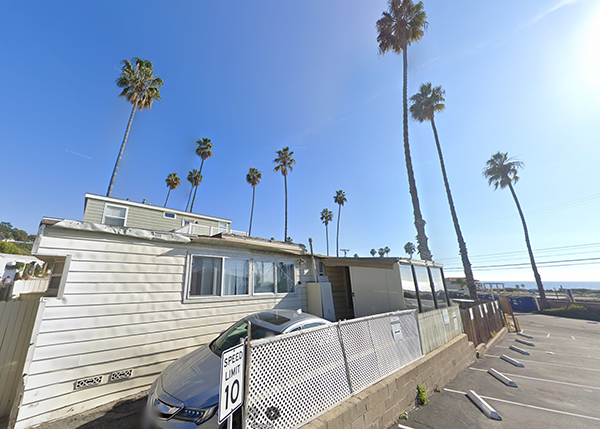
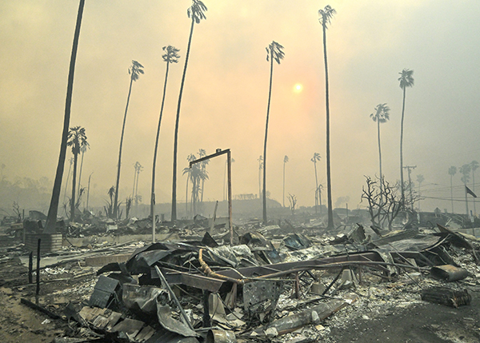

BEFORE: December 2023. Credit: Google Maps • AFTER: Pacific Palisades Bowl Mobile Estates destroyed along Pacific Coast Highway on January 8. Credit: Jeff Gritchen/MediaNews Group/Orange County Register via Getty Images
Graphic: Grace Manthey / CBS News